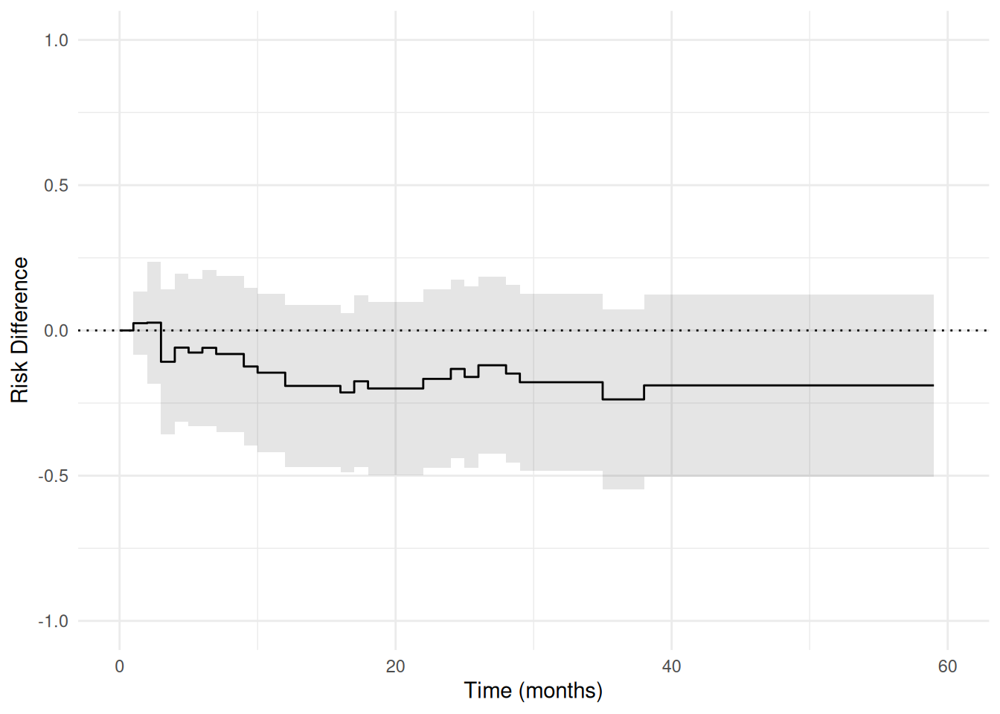
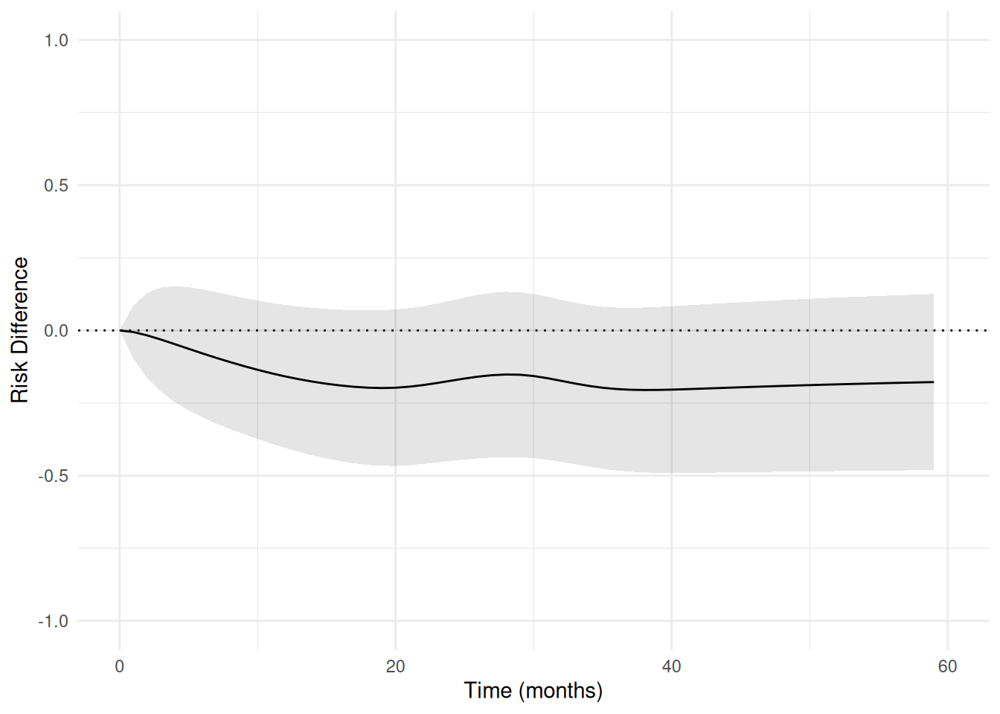

Note
This article is translated from the Zivich (2026): Pooled Logistic Regression for Survival Analysis example in the documentation of delicatessen, deli’s Python counterpart.
In the corresponding pre-print, Zivich et al. propose a novel implementation of estimating equations for causal survival analysis. This example reviews those key results and demonstrates how to use ee_plogit. See the corresponding paper for finer details on the full approach and how it works. This page primarily focuses on how to apply the code (and not the identification assumptions or underlying g-computation algorithm described in the paper).
Example 1: Bladder Cancer Time-to-Recurrence
The first example comes from a data set in Collett (2015). The data consists of 86 patients who received either placebo or the chemotherapeutic thiotepa following removal of superficial bladder tumors, with time measured in months. Baseline variables included the initial number of tumors and the diameter (in centimeters) of the largest initial tumor.
Here, the parameter of interest was the effect comparing novel to standard treatment on disease-free survival at 59 months (end of follow-up). While treatment was randomized, both number of tumors and tumor diameter are adjusted for in this illustration. Here, we will review how pooled logistic regression can be used for these types of survival analyses.
Pooled Logistic Regression
First, examine how a pooled logistic regression model can be fit to the data. Here, time is modeled using disjoint indicators which is handled automatically by ee_plogit by default.
# Number of unique event times (for specifying the initial values)
unique_event_times <- unique(d$time[d$delta == 1])
unique_event_times <- sort(unique_event_times)
params_plr <- length(unique_event_times)
# Define the estimating equation
psi_plogit <- function(theta) {
# ee_plogit: time = observed times, event = event indicator
ee_plogit(theta, X = W, time = times, event = y_event)
}
# Set initial values
inits <- c(rep(0, ncol(W)), # Coefs for baseline vars
-4, # Coef for intercept
rep(0, params_plr - 1)) # Coefs for time terms
# Fit the model
estr <- m_estimate(psi_plogit, init = inits)
# Print results for baseline covariate parameters
summary(estr, subset = seq_len(ncol(W)))
#> ── MEstimator Results ──────────────────────────────────────────────────────────
#> Observations: 86
#> Parameters: 24
#>
#> Estimate Std.Err Z-score 95% LCL 95% UCL P-value S-value
#> theta_1 -0.5479 0.3298 -1.6613 -1.1944 0.0985 0.0967 3.3710
#> theta_2 0.2598 0.0824 3.1535 0.0983 0.4213 0.00161 9.2757
#> theta_3 0.0735 0.0931 0.7898 -0.1089 0.2560 0.43 1.2188Here, we examine the 3 parameters corresponding to the baseline covariates. As detailed elsewhere, these coefficients can be interpreted as approximating the hazard ratio. Specifically, the hazard of recurrence among those on the novel drug is \exp(-0.55) = 0.58 that of those on placebo, conditional on tumor size and count.
Rather than model time non-parametrically, one can also use parametric specifications for how the discrete-time hazard of the event changes over time. As in the paper, we consider the use of splines to model time. Here, time was modeled using restricted quadratic splines with knots at 10, 20, 30, and 40 months.
# Creating time design matrix
t_steps <- seq_len(max(d$time))
intercept <- rep(1, length(t_steps))
time_splines <- deli_spline(t_steps, knots = c(10, 20, 30, 40),
power = 2, restricted = TRUE, normalized = FALSE)
s_matrix <- cbind(intercept, t_steps, time_splines)
# Define the estimating equation with spline time design
psi_plogit_spline <- function(theta) {
ee_plogit(theta, X = W, time = times, event = y_event, S = s_matrix)
}
# Set initial values
inits <- c(rep(0, ncol(W)), # Coefs for baseline vars
-4, # Coef for intercept
rep(0, 4)) # Coefs for time terms (intercept + t + 3 spline terms)
# Fit the model
estr <- m_estimate(psi_plogit_spline, init = inits)
# Print results for baseline covariate parameters
summary(estr, subset = seq_len(ncol(W)))
#> ── MEstimator Results ──────────────────────────────────────────────────────────
#> Observations: 86
#> Parameters: 8
#>
#> Estimate Std.Err Z-score 95% LCL 95% UCL P-value S-value
#> theta_1 -0.5367 0.3203 -1.6754 -1.1645 0.0912 0.0939 3.4134
#> theta_2 0.2488 0.0755 3.2953 0.1008 0.3968 0.000983 9.9904
#> theta_3 0.0731 0.0933 0.7834 -0.1097 0.2558 0.433 1.2063Here, we see the coefficients for the covariates are largely the same. While this is the case in this example, this may not always be true (especially when relying on more restrictive functional forms for time).
G-computation
As also detailed elsewhere, the hazard ratio has some major challenges for interpretation, including non-collapsibility. Now we show how to transform these pooled logistic regression results into marginal risk functions, which are easier to interpret and avoid some of these challenges. We will use a g-computation algorithm here. Briefly, we will fit a pooled logistic regression model, then we will use those coefficients to project what would have happened if everyone was given thiotepa (placebo). Both tumor count and tumor size were modeled as linear relationships. For flexibility, we will fit pooled logistic regression models stratified by treatment. This approach to modeling does not rely on a proportional hazards assumption for the treatment (unlike the previous approach).
# Extract treatment indicator and covariates (without treatment)
a <- d$novel
times <- d$time
y_event <- d$delta
W <- as.matrix(d[, c("init", "size")])
# Counting up events to define number of parameters later
event_times <- c(0, sort(unique(d$time[d$delta == 1])), 59)
event_times_a1 <- sort(unique(d$time[d$delta == 1 & d$novel == 1]))
event_times_a0 <- sort(unique(d$time[d$delta == 1 & d$novel == 0]))
params_rd <- length(event_times)
params_plr_a1 <- length(event_times_a1)
params_plr_a0 <- length(event_times_a0)
psi_rd <- function(theta) {
# Extracting parameters
rds <- theta[seq_len(params_rd)]
idPLR <- params_rd + ncol(W) + params_plr_a1
beta1 <- theta[(params_rd + 1):idPLR]
beta0 <- theta[(idPLR + 1):length(theta)]
# Nuisance models (ee_plogit: time = observed time, event = event indicator)
ee_plog1 <- ee_plogit(beta1, X = W, time = times, event = y_event,
unique_times = event_times_a1)
# Restrict to treated observations
ee_plog1 <- ee_plog1 * matrix(rep(as.numeric(a == 1), each = nrow(ee_plog1)),
nrow = nrow(ee_plog1))
ee_plog0 <- ee_plogit(beta0, X = W, time = times, event = y_event,
unique_times = event_times_a0)
# Restrict to control observations
ee_plog0 <- ee_plog0 * matrix(rep(as.numeric(a == 0), each = nrow(ee_plog0)),
nrow = nrow(ee_plog0))
# Predictions to get risk differences (plogit_predict: time = observed time, event = event indicator)
risk1 <- plogit_predict(theta = beta1, time = times, event = y_event, X = W,
times_to_predict = event_times,
measure = "risk",
unique_times = event_times_a1)
risk0 <- plogit_predict(theta = beta0, time = times, event = y_event, X = W,
times_to_predict = event_times,
measure = "risk",
unique_times = event_times_a0)
# Risk difference estimating equations
ee_rd <- risk1 - risk0 - matrix(rep(rds, ncol(risk1)),
nrow = length(rds), ncol = ncol(risk1))
# Returning stacked estimating equations
rbind(ee_rd, ee_plog1, ee_plog0)
}
# Set initial values
inits <- c(rep(0, params_rd),
rep(0, ncol(W)), -4, rep(0, params_plr_a1 - 1),
rep(0, ncol(W)), -4, rep(0, params_plr_a0 - 1))
# Fit the model. The stratified pooled logistic models separate in some time
# intervals, so we use the Levenberg-Marquardt solver ("lm"), which handles
# the near-singular Jacobian these fits produce.
estr <- m_estimate(psi_rd, init = inits, solver = "lm")We can then examine the table for the causal risk difference at 59 months.
# Print the risk difference at 59 months (last RD parameter)
summary(estr, subset = params_rd)
#> ── MEstimator Results ──────────────────────────────────────────────────────────
#> Observations: 86
#> Parameters: 54
#>
#> Estimate Std.Err Z-score 95% LCL 95% UCL P-value S-value
#> theta_23 -0.1892 0.1159 -1.6323 -0.4165 0.0380 0.103 3.2846Perhaps more informative is to examine a plot of the results. In this plot, inference is implicitly for the underlying causal risk difference function, so rather than confidence intervals the confidence bands are presented. The confidence bands can be straightforwardly computed using deli.
# Compute confidence bands
cb <- confidence_bands(estr, method = "supt",
subset = 2:params_rd, seed = 7777)
# Format results for plotting
rd_vals <- estr@theta[seq_len(params_rd)]
rd_results <- data.frame(
time = event_times,
rd = rd_vals,
lcb = c(0, cb[, 1]),
ucb = c(0, cb[, 2])
)
# Confidence band shading (step function). Each interval between adjacent
# times holds the limits from its left-hand endpoint, so these are the corners
# of a stepped region matching the shape of the risk difference curve.
band_interval <- seq_len(nrow(rd_results) - 1)
band_corner <- as.vector(rbind(band_interval, band_interval + 1))
band_value <- rep(band_interval, each = 2)
rd_band <- data.frame(
time = rd_results$time[band_corner],
lcb = rd_results$lcb[band_value],
ucb = rd_results$ucb[band_value]
)
# Plot the risk difference function
ggplot(rd_results, aes(x = time, y = rd)) +
geom_hline(yintercept = 0, linetype = 3) +
geom_ribbon(
data = rd_band,
aes(x = time, ymin = lcb, ymax = ucb),
inherit.aes = FALSE,
fill = "black",
alpha = 0.1
) +
geom_step() +
coord_cartesian(xlim = c(0, 60), ylim = c(-1, 1)) +
labs(x = "Time (months)", y = "Risk Difference")
The same process can also be done when modeling time using splines. The following code illustrates this process.
# Creating time design matrix with splines
t_steps <- seq_len(59)
intercept <- rep(1, length(t_steps))
time_splines <- deli_spline(t_steps, knots = c(10, 20, 30, 40),
power = 2, restricted = TRUE, normalized = FALSE)
s_matrix <- cbind(intercept, t_steps, time_splines)
tp_intervals <- 0:59
params_rd <- length(tp_intervals)
psi_rd_spline <- function(theta) {
# Extracting parameters
risks <- theta[seq_len(params_rd)]
idPLRM <- params_rd + 7
beta1 <- theta[(params_rd + 1):idPLRM]
beta0 <- theta[(idPLRM + 1):length(theta)]
# Nuisance models (ee_plogit: time = observed time, event = event indicator)
ee_plog1 <- ee_plogit(beta1, X = W, time = times, event = y_event, S = s_matrix)
ee_plog1 <- ee_plog1 * matrix(rep(as.numeric(a == 1), each = nrow(ee_plog1)),
nrow = nrow(ee_plog1))
ee_plog0 <- ee_plogit(beta0, X = W, time = times, event = y_event, S = s_matrix)
ee_plog0 <- ee_plog0 * matrix(rep(as.numeric(a == 0), each = nrow(ee_plog0)),
nrow = nrow(ee_plog0))
# Predictions to get risk differences (plogit_predict: time = observed time, event = event indicator)
risk1 <- plogit_predict(theta = beta1, time = times, event = y_event, X = W,
S = s_matrix, times_to_predict = tp_intervals,
measure = "risk")
risk0 <- plogit_predict(theta = beta0, time = times, event = y_event, X = W,
S = s_matrix, times_to_predict = tp_intervals,
measure = "risk")
# Risk difference estimating equations
ee_rd <- risk1 - risk0 - matrix(rep(risks, ncol(risk1)),
nrow = length(risks), ncol = ncol(risk1))
# Returning stacked estimating equations
rbind(ee_rd, ee_plog1, ee_plog0)
}
# Set initial values
inits <- c(rep(0, params_rd),
0, 0, -4, rep(0, 4),
0, 0, -4, rep(0, 4))
# Fit the model with the Levenberg-Marquardt solver, as above
estr <- m_estimate(psi_rd_spline, init = inits, solver = "lm")
# Compute confidence bands
cb <- confidence_bands(estr, method = "supt",
subset = 2:params_rd, seed = 7777)
# Format results for plotting
rd_results <- data.frame(
time = tp_intervals,
rd = estr@theta[seq_len(params_rd)],
lcl = c(0, cb[, 1]),
ucl = c(0, cb[, 2])
)
# Plot the risk difference function
ggplot(rd_results, aes(x = time, y = rd)) +
geom_hline(yintercept = 0, linetype = 3) +
geom_ribbon(aes(ymin = lcl, ymax = ucl), fill = "black", alpha = 0.1) +
geom_line() +
coord_cartesian(xlim = c(0, 60), ylim = c(-1, 1)) +
labs(x = "Time (months)", y = "Risk Difference")
The results between the two approaches are largely the same. These examples highlight how pooled logistic regression can be used to flexibly conduct causal survival analyses. Importantly, the estimating equation approach taken here can substantially reduce run-times and avoids reliance on the bootstrap for inference. Further details on this general approach and the benefits of estimating equations can be found in the following references.
References
Abbott RD. (1985). Logistic regression in survival analysis. American Journal of Epidemiology, 121(3), 465-471.
D’Agostino RB, Lee ML, Belanger AJ, Cupples LA, Anderson K, & Kannel WB. (1990). Relation of pooled logistic regression to time dependent Cox regression analysis: the Framingham Heart Study. Statistics in Medicine, 9(12), 1501-1515.
Dumas E, & Stensrud MJ. (2025). How hazard ratios can mislead and why it matters in practice. European Journal of Epidemiology, 40(6), 603-609.
Hernán MA. (2010). The hazards of hazard ratios. Epidemiology, 21(1), 13-15.
Zivich PN, Cole SR, Shook-Sa BE, DeMonte JB, & Edwards JK. (2025). Estimating equations for survival analysis with pooled logistic regression. arXiv:2504.13291
Zivich PN, Klose M, DeMonte JB, Shook-Sa BE, Cole SR, & Edwards JK. (2026). An Improved Pooled Logistic Regression Implementation. Epidemiology, In-Press.